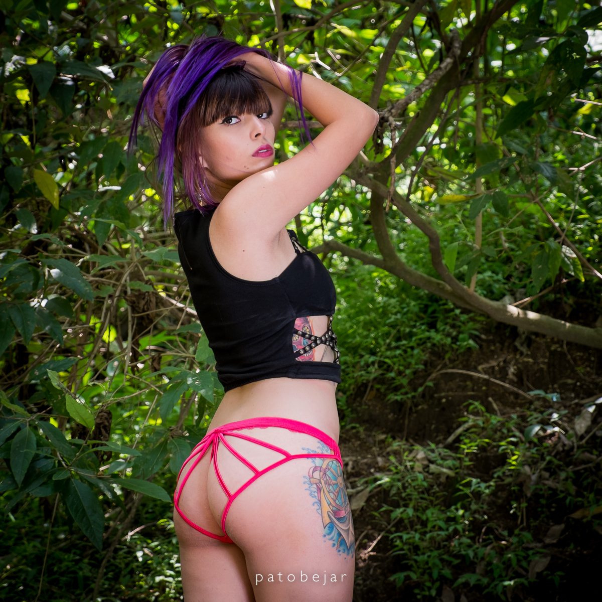
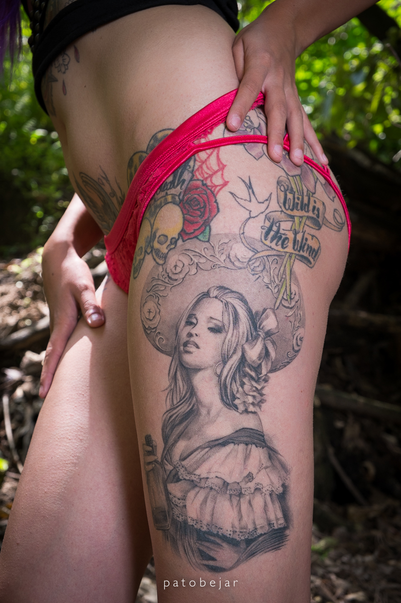
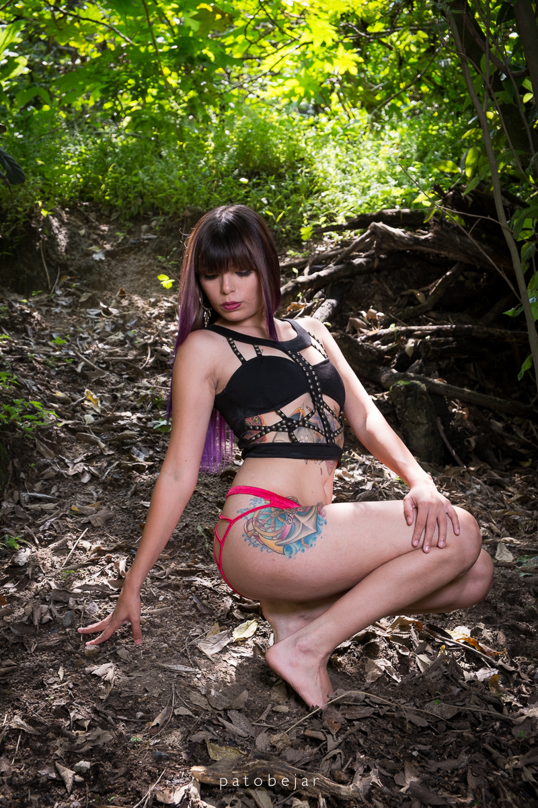

Queridos lectores, el día de hoy estoy completamente feliz de presentar a una chica de primera categoría, su carisma, su personalidad es realmente llamativo, sin mas pasemos a la entrevista.
¿Cómo te defines a ti misma?
Bueno soy una mujer centrada en sus cosas, no me gusta estar dando papaya como quien dice, pero a la vez soy muy romántica y sensible, un tanto feminista creo que no es nada malo mientras no lo lleve a los extremos de convertirse en un odio ni nada por el estilo.
Me considero a mí misma una buena persona, tengo defectos y manías como todos, pero en general trato de ser mejor cada día.
¿Qué opinión te merece la coyuntura actual del país?
Lastimosamente vamos mal, no solo en nuestro país creo yo, todos los países. es más, incluyendo las grandes potencias mundiales, sufrimos y entramos en una crisis de la cual ya nos estamos reponiendo, pero aun esta muy lastimado sobre todo por el tema económico esperemos que conjuntamente con nuestras autoridades y población en general, con trabajo y mucho esfuerzo logremos levantarnos y seguir hacia un futuro mucho mejor.
Tenemos que heredar a nuestros hijos un mundo mejor del que nos tocó vivir.
¿tienes pareja sentimental en estos momentos?
Me siento dichosa de contar con un esposo que es mi todo, puedo contar con el en todo aspecto me apoya y estoy completamente enamorada, la vida es bonita cuando nos ofrece cosas lindas
Por el momento todo marcha de viento en popa, pero es muy importante saber conducir el matrimonio, no es sencillo ni nada por el estilo, pero hay voluntad y es lo más importante. Espero que pronto se me haga el milagro de tener un bebe estamos entusiasmados con eso, es una de las cosas más lindas del mundo, es lo que le pido a Dios.
